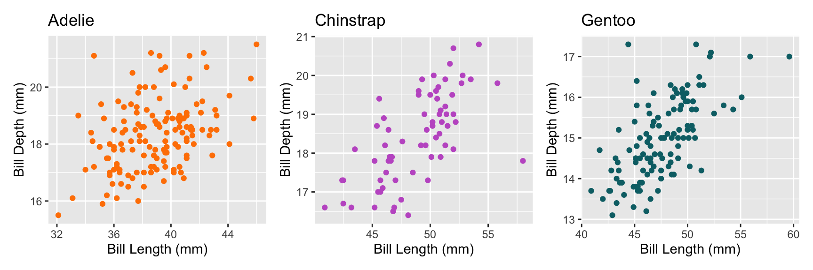

Code
getwd()[1] "/Users/osinnii/Documents/Github/productive-R-workflow/R"This Quarto document serves as a practical illustration and is designed primarily for educational purposes, so the focus is on demonstrating R tidyverse and Quarto techniques rather than on the rigor of its scientific content.
This script makes a simple analysis of variables bill_length_mm and bill_depth_mm from popular palmerpenguin dataset in R in several steps.

The R code is by default blended. Click on the code button below to show it
getwd()[1] "/Users/osinnii/Documents/Github/productive-R-workflow/R"All source data, functions and outputs are contained within the R project and can be reproduced.
For this data analysis we will need 3 R packages: tidyverse, hrbrthemes and patchwork
library(tidyverse)
library(hrbrthemes) # ipsum theme for ggplot2 charts
library(patchwork)Let’s load a clean data version, together with functions available in functions.R.
# Source functions
source(file="functions.R")
# Read the clean dataset
data <- readRDS("./../input/clean_data.rds")Let’s use one of generic functions to see basic statistics on all data columns
summary(data) rowid species island bill_length_mm
Min. : 1.00 Length:338 Length:338 Min. :32.10
1st Qu.: 89.25 Class :character Class :character 1st Qu.:39.45
Median :174.50 Mode :character Mode :character Median :44.50
Mean :173.82 Mean :43.97
3rd Qu.:259.75 3rd Qu.:48.50
Max. :344.00 Max. :59.60
NA's :2
bill_depth_mm flipper_length_mm body_mass_g sex
Min. :13.10 Min. :172.0 Min. :2700 Length:338
1st Qu.:15.57 1st Qu.:190.0 1st Qu.:3550 Class :character
Median :17.30 Median :197.0 Median :4050 Mode :character
Mean :17.14 Mean :200.9 Mean :4203
3rd Qu.:18.62 3rd Qu.:213.2 3rd Qu.:4750
Max. :21.50 Max. :231.0 Max. :6300
NA's :2 NA's :2 NA's :2
year
Min. :2007
1st Qu.:2007
Median :2008
Mean :2008
3rd Qu.:2009
Max. :2009
Mean bill length for Adelie specie on different islands using dplyr
data %>%
filter(species == "Adelie") %>%
group_by(island) %>%
summarize(mean_bill_length = num(mean(bill_length_mm, na.rm = TRUE), digits= 2))# A tibble: 3 × 2
island mean_bill_length
<chr> <num:.2!>
1 Biscoe 38.98
2 Dream 38.55
3 Torgersen 38.95Plot mean bill length vs. mean bill depth for different species, 3 species combined on one graph.
data %>%
na.omit() %>%
ggplot(aes(x = bill_length_mm, y = bill_depth_mm, color = species, shape = species)) + geom_point() +
labs(x = 'Bill Length (mm)', y = 'Bill Depth (mm)', title = 'Penguin Bill Dimensions') + scale_shape_manual(values = c("Adelie" = 16, "Chinstrap" = 17, "Gentoo" = 18))
It is also interesting to note that bill length and bill depth are quite different from one specie to another. This is summarized in the 2 tables below:
data %>%
group_by(species) %>%
summarize(avg_bill_length = mean(bill_length_mm, na.rm = TRUE))
data %>%
group_by(species) %>%
summarize(avg_bill_depth = mean(bill_depth_mm, na.rm = TRUE))# A tibble: 3 × 2
species avg_bill_length
<chr> <dbl>
1 Adelie 38.8
2 Chinstrap 48.8
3 Gentoo 47.5# A tibble: 3 × 2
species avg_bill_depth
<chr> <dbl>
1 Adelie 18.3
2 Chinstrap 18.4
3 Gentoo 15.0Let’s use patchwork and our previously saved function to make 3 side-by-side scatterplots for separate species.
p1 <- scatterplot.f(data, "Adelie","red")
p2 <- scatterplot.f(data, "Chinstrap","green")
p3 <- scatterplot.f(data, "Gentoo","blue")
p1 + p2 + p3
Thanks for watching!